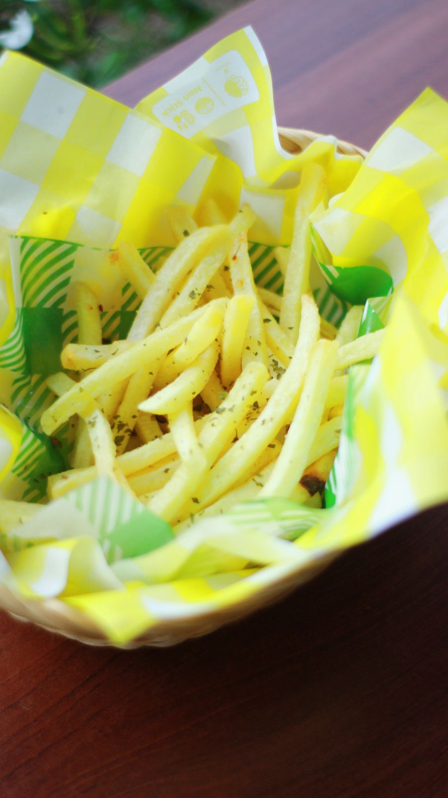

Toko Kopi Naluri (TKN) adalah cabang dari Naluri Hati yang merupakan toko kopi yang berada di JL. Lamtoro Gung Kota Palangkaraya. TKN berada di JL. C Mihing Kota Palangkaraya.
TKN merupakan toko kopi yang berfokus pada tampilan industrial, dengan kualitas kopi dan makanan yang ditawarkan kepada pelanggan.
TKN memiliki suasana yang industrial tetapi sangat “homie” sehingga pelanggan akan merasakan suasana yang sangat “cozy” saat nongkrong bersama keluarga maupun teman-teman.
